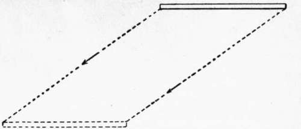
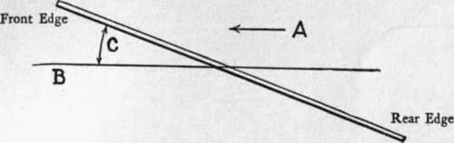
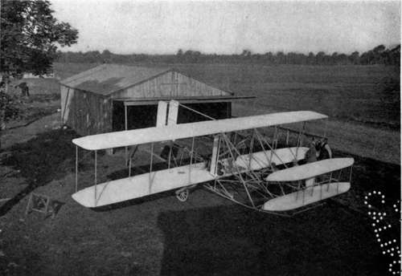
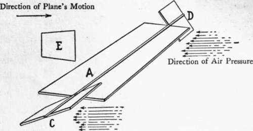

Chapter V. How An Aeroplane Is Balanced
Description
This section is from the book "The New Art Of Flying", by Waldemar Kaempffert. Also available from Amazon: The New Art of Flying.
Chapter V. How An Aeroplane Is Balanced
Drop a flat piece of cardboard from your hand. It will fall. But as it falls its surface will offer a certain resistance, so that it becomes in effect a parachute. The amount of its resistance will depend on the amount of its surface. If the cardboard be driven to the left, as shown in Fig. 16, it will still fall, but along an inclined path. In other words it will fall while advancing and advance while falling.
Fig. 16. Path of an aeroplane driven forward but with a speed too low for horizontal flight, and with too flat an angle.
Suppose that this same piece of cardboard, this aeroplane, as we may call it, is inclined to its lower surface. The driving power, whatever it may be, overcomes the resistance or pressure; yet the effect of the resistance or pressure is to keep the plane up in the air. So, the plane tends to slide up diagonally on the resisting air; gravity (weight) tends to draw the plane down toward the earth; and the diagonal sliding action tends to move the plane farther from the earth. This climbing effect is obviously dependent on the angle of the plane.
Fig. 17. Path of a plane inclined at the angle C to the horizontal. The arrow A indicates the direction of travel. If the speed is sufficient the plane will rise because of the upward inclination of the plane.
The wind and that it is driven along a horizontal path B in the direction of the arrow A as shown in Fig. 17. If it were not driven forward the cardboard plane would fall by reason of its weight. But since it is driven forward and since it is inclined to the air, it offers resistance, which means that pressure is exerted upward against.
If the angle is large, it is great; if the angle is small, it is slight. Given a very high speed of propulsion, a speed greater than the falling tendency, and the plane is bound to rise. Given a speed of propulsion less than the falling tendency and the plane will sooner or later settle to the ground. Horizontal flight can therefore be maintained by proper adjustment of speed and angle.
This angle at which the plane moves against the air is known as the " angle of incidence." It is positive, because it has a tendency to lift. If the plane were tilted forward or dipped, the sliding effect would be earthward. Indeed, so marked would be this effect that the plane would reach the ground much more quickly than if it fell simply by its own weight. In that case the angle of incidence is negative, because it depresses.
It is therefore evident that an advancing aeroplane may be caused to travel up or down simply by making the angle of incidence positive or negative.
During flight, a Wright or Curtiss or Blériot machine is subjected to every whim of the air.
Fig. 21. The first type of Wright biplane, showing the general disposition of the main planes, forward horizontal rudders and rear vertical rudders.
Photograph by Edwin Levick.
These incessant variations of the air must all be counteracted; otherwise the machine will capsize.
It happens during flight that the aeroplane, because of the wind's caprice, will drop more on one side than on the other. To maintain his balance, the aviator must in some way lift the falling side or lower the rising side, or do both. It was this problem that long baffled the inventor of aeroplane flying-machines. The whole art of machine-flying is summed up in its successful solution. To the Wright Brothers of Dayton, Ohio, belongs the full credit of having devised the first and thus far the most efficient means of solving that problem, a means now embodied in almost every successful flying-machine.
Suppose that the plane A in Fig. 18 is provided at each side with tips C and D, hinged so that they can be swung up or down. If these two tips (ailerons the French call them) are swung so that they lie flush with the main plane A, they have no effect whatever beyond adding to the amount of aeroplane surface. Suppose that the near side of the plane drops. In that case, the tip C is thrown down as shown of equilibrium. To assist in this restoration, the tip D at the farther side of the plane can be tilted down, so that the angle of incidence is negative or depressive. Hence the far end of the plane is lowered while the near end is raised. In all flying-machines this dropping of one tip and raising of the other is effected simultaneously by a system of cables and levers. When in Fig. 18. What happens? More resistance is offered to the air at that side and greater upward pressure is consequently exerted, so that the plane is restored to its former position the plane's balance has been regained, the tips are swung so that they lie flush with the plane A, and become virtually part of the plane.
Fig. 18. How a plane is laterally balanced by means of ailerons and a vertical rudder.
The plane A is provided with hinged tips C and D and with a vertical rudder E. The tips are swung in opposite directions to correct any tipping of the plane, and the vertical rudder E is swung over to the side of least resistance (the side of the tip D in the example here given) in order to prevent the entire machine from rotating on a vertical axis.
Continue to: